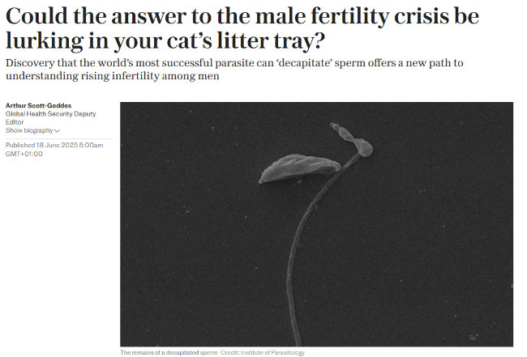

About Me

I am a cell and molecular biologist specialized in host–pathogen interactions at the Institute of Parasitology, Justus Liebig University Giessen (JLU). My research investigates how intracellular apicomplexan parasites—including Toxoplasma gondii, Cryptosporidium parvum, Besnoitia besnoiti, and Eimeria bovis—modulate host cell cycle progression, innate immune responses, and cellular metabolism.
Latest Publication
Adverse impact of acute Toxoplasma gondii infection on host cell cycle and genome integrity
Rojas-Barón L, Hermosilla C, Taubert A, Velásquez ZD • The FEBS Journal
This study demonstrates how acute T. gondii infection disrupts host cell cycle progression and compromises host genomic stability during intracellular replication.
Read Full Article (DOI) →Press Release

Research Highlighted in the Media
Media coverage featuring our recent study on acute Toxoplasma gondii infection.
Read Press Article →Key Research Areas
Click on any research area below to expand its peer-reviewed publications.
Host Cell Cycle & Genome Stability
Dissecting how intracellular parasites arrest or dysregulate host mitosis, cytokinesis, and DNA damage responses.
Click to view/hide publications ↓
- Rojas-Barón L, Hermosilla C, Taubert A, Velásquez ZD (2025). Adverse impact of acute Toxoplasma gondii infection on host cell cycle and genome integrity. The FEBS Journal. [DOI]
- Rojas-Barón L, Hermosilla C, Taubert A, Velásquez ZD (2024). Toxoplasma gondii modulates the host cell cycle, chromosome segregation, and cytokinesis. Parasites & Vectors, 17, 173. [DOI]
- Velásquez ZD et al. (2021). Eimeria bovis infections induce G1 cell cycle arrest in endothelial host cells. Parasitology, 148(3), 341–353. [DOI]
- Velásquez ZD et al. (2019). Toxoplasma gondii-induced host cellular cell cycle dysregulation. Scientific Reports, 9(1), 12496. [DOI]
Innate Immunity & NETosis
Investigating neutrophil extracellular trap (NET) extrusion, purinergic signaling, and immune evasion under physioxia.
Click to view/hide publications ↓
- Conejeros I, Velásquez ZD et al. (2022). Glycolysis, monocarboxylate transport, and purinergic signaling in Eimeria bovis-induced NETosis. Frontiers in Immunology, 13, 842482. [DOI]
- Hasheminasab SS, Conejeros I, Velásquez ZD et al. (2022). ATP Purinergic Receptor P2X1-Dependent Suicidal NETosis by Cryptosporidium parvum. Biology, 11(3), 442. [DOI]
Host–Parasite Metabolism
Mapping metabolic reprogramming and bystander cell communication during apicomplexan development.
Click to view/hide publications ↓
- Velásquez ZD et al. (2022). Besnoitia besnoiti-induced alterations in host cell metabolism and lipid droplet formation. Parasitology Research. [ORCID]
- View complete list on Google Scholar or ORCID.
Background & Methodological Expertise
Researcher: Justus Liebig University Giessen (Germany) & Universidad Austral de Chile (FONDECYT Postdoctoral Grant).
Education: PhD in Cell and Molecular Biology (Marcelino Botín Foundation & CONICYT Fellowships).
Team Members
Current researchers, doctoral candidates, and students in our group at JLU Giessen.
PhD Zahady D Velásquez
Project Leader / Researcher
Host cell cycle, genome integrity, and apicomplexan host–pathogen interactions.

Honorine Mireille Nguele Ampama
Dr Candidate (Dr. med. vet. / Dr. rer. nat.)
Research focus: In vitro inhibition of Cryptosporidium parvum infection by the olive oil polyphenol oleocanthal and insights into the prevalence of cryptosporidiosis in children in Cameroon.

Name of visitor
M.Sc. / Veterinary Thesis Student
Research focus: Topic of research.
Open Positions
Opportunities to join our research group at the Institute of Parasitology, JLU Giessen.
M.Sc. / Dr. med. vet. Thesis Projects (Ongoing)
Accepting InquiriesWe welcome motivated Veterinary Medicine, Biology, and Biomedicine students interested in live-cell microscopy, cell cycle regulation, or host–parasite metabolism. Please send a short statement of interest and your CV.
Apply via Email →Postdoctoral & Doctoral Fellowships
Candidates interested in applying for external fellowships (e.g., DAAD, Alexander von Humboldt, DFG, or MSCA) to work on apicomplexan cell biology are encouraged to contact Dr. Velásquez directly with their CV and research ideas.
Contact
PhD Zahady D Velásquez
Institut für Parasitologie
Justus-Liebig-Universität Giessen
Schubertstr. 81
35392 Giessen
Tel. +49-641-9938478
Email: zahady.velasquez@vetmed.uni-giessen.de